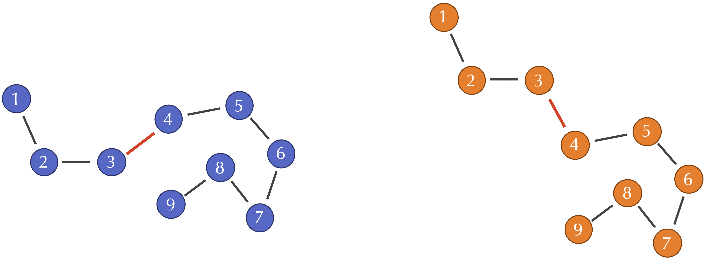
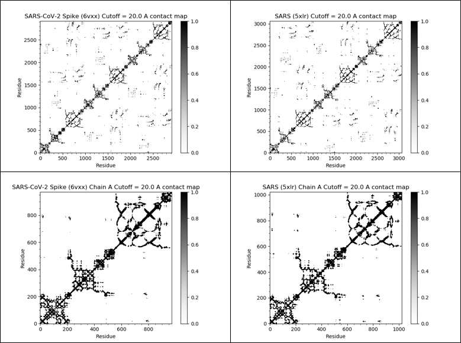
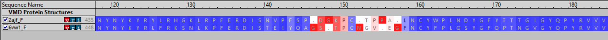
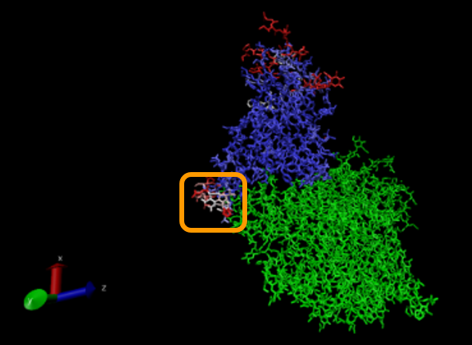

Searching for Local Differences in the SARS-CoV and SARS-CoV-2 Spike Proteins
In part 1 of this module, we used a variety of existing software resources to predict the structure of the SARS-CoV-2 spike protein from its amino acid sequence. We then discussed how to compare our predicted structures against the experimentally confirmed structure of the protein.
Now begins part 2, in which we ask a simple question: how does the structure of the SARS-CoV-2 spike protein compare against the SARS-CoV spike protein? More importantly, in keeping with the biological maxim that the structure of a protein informs the function of that protein, can we find any clues lurking in the spike proteins’ structure that would indicate why the two viruses behave differently in humans? Why did SARS-CoV fizzle out while SARS-CoV-2 was infectious enough to cause a pandemic?
Focusing on a variable region of interest in the spike protein
We already know from our work in part 1 that when we compare the SARS-CoV and SARS-CoV-2 genomes, the spike protein is much more variable than other regions. We even see variable and conserved regions within the spike protein, as the following figure (reproduced from the section on homology modeling) indicates.
 Variable and conserved regions in the SARS-CoV and SARS-CoV-2 spike proteins. The S1 domain tends to be more variable, while the S2 domain is more conserved (and even has a small region of 100% similarity). Source: Jaimes et al. 20201.
Variable and conserved regions in the SARS-CoV and SARS-CoV-2 spike proteins. The S1 domain tends to be more variable, while the S2 domain is more conserved (and even has a small region of 100% similarity). Source: Jaimes et al. 20201.
The most variable region between the two viruses in the spike protein is the receptor binding motif (RBM), part of the receptor binding domain (RBD) whose structure we predicted using GalaxyWEB in the homology modeling tutorial. The RBM is the component of the RBD that mediates contact with ACE2, as the following simplified animation of the process illustrates.
Given that the RBM is so critical to the virus’s ability to bond to the target human enzyme, the fact that it has mutated so much from SARS-CoV to SARS-CoV-2 makes it a fascinating region of study. Do the mutations that SARS-CoV-2 has accumulated make it easier for the virus to bond to human cells? Could this be why SARS-CoV-2 is more infectious than SARS-CoV?
As we hone in on the RBM, we provide an alignment of the 70 amino acid long RBM region from SARS-CoV and SARS-CoV-2 (as well as two animal viruses) in the figure below.
 A multiple alignment of the RBM (colored amino acids) across the human SARS-CoV virus (first row), a version of the virus isolated in a palm civet (second row), a virus isolated in a bat in 2013 (third row), and the SARS-CoV-2 virus (fourth row). Beneath each column, an asterisk denotes full conservation, a period denotes a slight mutation, and a colon indicates high variability 2.
A multiple alignment of the RBM (colored amino acids) across the human SARS-CoV virus (first row), a version of the virus isolated in a palm civet (second row), a virus isolated in a bat in 2013 (third row), and the SARS-CoV-2 virus (fourth row). Beneath each column, an asterisk denotes full conservation, a period denotes a slight mutation, and a colon indicates high variability 2.
We know from our work in structure prediction that just because the sequence of a protein has been greatly mutated does not mean that the structure of that protein has changed much. Therefore, in this lesson, we will start a comparative structural analysis of the SARS-CoV and SARS-CoV-2 spike proteins to determine whether these mutations have contributed to higher infectiousness. All of this analysis will be performed using the software resources ProDy and VMD, which we briefly introduced earlier in the module.
From protein structure to bound complexes
Not only did researchers experimentally verify the structure of the spike protein of the two viruses, they also determined the structure of the RBD complexed with ACE2 in both SARS-CoV (PDB entry: 2ajf) and SARS-CoV-2 (PDB entry: 6vw1).
The experimentally verified SARS-CoV-2 structure is a chimeric protein formed of the SARS-CoV RBD in which the RBM has the sequence from SARS-CoV-2 3. A chimeric RBD was used for complex technical reasons to ensure that the crystallization process during X-ray crystallography could be borrowed from that used for SARS-CoV.
Because we know the structures of the bound complexes, we can produce 3-D visualizations of the two different complexes and look for structural differences involving the RBM. We will use VMD to produce this visualization, rotating the structures around to examine potential differences. However, we should be wary of only trusting our eyes to guide us; can we use a computational approach to tell us where to look for structural differences between the two RBMs?
A first attempt at identifying local dissimilarities between protein structures
In the previous lesson on assessing the accuracy of a predicted structure, we introduced a metric called root mean square deviation (RMSD) for quantifying the difference between two protein structures. RMSD offered an excellent method for a global comparison (i.e., a comparison across all structures), but we are interested in the local regions where the SARS-CoV and SARS-CoV-2 complexes differ. To this end, we will need an approach that examines individual amino acids in similar protein structures.
STOP: How could we compare individual amino acid differences of two (similar) protein structures?
Recall the following definition of RMSD for two protein structures s and t, in which each structure is represented by the positions of its n alpha carbons (s1, …, sn) and (t1, …, tn).
\[\text{RMSD}(s, t) = \sqrt{\dfrac{1}{n} \cdot (d(s_1, t_1)^2 + d(s_2, t_2)^2 + \cdots + d(s_n, t_n)^2)}\]If two similar protein structures differ in a few locations, then the corresponding alpha carbon distances d(si, ti) will likely be higher at these locations. However, we will introduce a more sophisticated approach for comparing the local structure of si against ti. To do so, we first shift gears to discuss an alternative to RMSD for computing global structure.
Contact maps and Qres
One of the weaknesses of RMSD that we pointed out in part 1 of this module is that a change to a single bond angle at the i-th position may cause d(sj, tj) to be nonzero when j > i, even though the structure of the protein structure downstream of the bond angle change has not changed. For example, when we discussed the Kabsch algorithm, we showed the figure below of two protein structures that are identical except for a single bond angle. All of the alpha carbon distances d(si, ti) for i at least 4 will be thrown off by this changed angle.
 Two toy protein structures in which the bond angle between the third and fourth alpha carbon has been changed. This change does not affect the distance between the i-th and j-th alpha carbons when i and j are both at least 4.
However, note that when i and j are both at least 4, the distance d(si, sj) between the i-th and j-th alpha carbons in S will still be similar to the distance d(ti, tj) between the same alpha carbons in T. This observation leads us to a more robust approach for measuring differences in two protein structures, which compares all pairwise distances d(si, sj) in one protein structure against the corresponding distances d(ti, tj) in the other structure.
To help us visualize all these pairwise distances, we will introduce the contact map of a given protein structure, which is a binary 2-D matrix indicating whether two alpha carbons are near each other. After setting a threshold distance D, and then for a given structure s, we set M(i, j) = 1 if the distance d(si, sj) is less than D, and M(i, j) = 0 if d(si, sj) is greater than or equal to D.
The following figure shows the contact maps for the SARS-CoV-2 and SARS-CoV spike proteins (both full proteins and single chains) with a threshold distance D of twenty angstroms. In this map, we color contact map values black if they are equal to 1 (close amino acids) and white if they are equal to 0 (distant amino acids).
Note two things in the contact maps below. First, many black values cluster around the main diagonal of the matrix, since amino acids that are near each other in the protein sequence will remain near each other in the 3-D structure. Second, the contact maps for the two proteins are very similar, driving home further the similarity of the two proteins’ structures.
Note: Interested in learning how to make contact maps? We will use ProDy to do so in a later section.
 The contact maps of the SARS-CoV-2 spike protein (top left), SARS-CoV spike protein (top right), single chain of the SARS-CoV-2 spike protein (bottom left), and single chain of the SARS-CoV spike protein (bottom right). If the distance between the i-th and j-th amino acids in a protein structure is 20.0 Å or less, then the (i, j)-th cell of the figure is colored black. We see that SARS-CoV-2 and SARS S proteins have very similar contact maps, indicating similar structures.
STOP: How do you think the contact map will change as we increase or lower the threshold distance?
Consider the i-th row (or column) of a protein’s contact map, which represents all alpha carbons that are near the i-th alpha carbon. We can see how two proteins differ at the i-th position if we look at all of this row’s values. That is, if we compare all of the d(si, sj) values to all of the d(ti, tj) values.
We now will use pairwise distances between alpha carbons to determine how different two proteins are at the i-th alpha carbon, using a metric called Q per residue (Qres). The formal definition of Qres for two structures s and t is as follows4:
\[Q_{res}^{(i)} = \dfrac{1}{N-k} \sum^{residues}_{j\neq i-1,i,i+1} \textrm{exp}[-\dfrac{[d(s_i,s_j)-d(t_i,t_j)]^2}{2\sigma^2_{i,j}}]\]This equation includes the following parameters.
- N is the number of residues in each protein (this assumes that they have the same length; generalizations for proteins of non-equal length exist);
- k is equal to 2 when i is at either the start or the end of the protein, and k is equal to 3 otherwise;
- The variance term \(\sigma_{ij}^2\) is equal to \(\left\lvert{i-j}\right\rvert ^{0.15}\), which corresponds to the sequence separation between the i-th and j-th alpha carbons.
Note: The above definition assumes that the two proteins have the same length or have been pre-processed by removing amino acids that only occur in one protein. Generalizations of Qres for proteins of non-equal length do exist.
If two proteins are very similar at the i-th alpha carbon, then d(si, sj) - d(ti, tj) will be close to zero, and so the term inside the summation in the Qres equation will be close to 1. This summation has N - k terms, and so Qres will be close to 1. As two proteins become more different at the i-th alpha carbon, then the term inside the summation will head toward zero, and so will the Qres value as well.
Therefore, Qres is a similarity metric ranging between 0 and 1, with low scores representing low similarity between two proteins at the i-th position, and higher scores representing high similarity at this position.
We now turn to a tutorial that will compute Qres for the SARS-CoV and SARS-CoV-2 spike proteins. This tutorial will use the VMD plugin Multiseq, a bioinformatics analysis environment. We will use Multiseq to align the SARS-CoV-2 (chimeric) RBD and SARS RBD using the PDB entries 6vw1 and 2ajf, respectively. After determining Qres, we will visualize the individual locations where the two RBD regions differ.
Local comparison of spike proteins leads us to a region of interest
In the tutorial, we formed a “structural” alignment of the two coronavirus RBD regions, in which blue columns correspond to similar areas of the structure (high Qres) and red columns correspond to dissimilar areas of the structure (low Qres).
If we zoom in on the region around position 150 of the alignment, we find a 13-column region of the alignment within the RBD region for which Qres values are significantly lower than they are elsewhere. This region corresponds to positions 476 to 485 in the SARS-CoV-2 spike protein and is shown in the figure below.

(Top) A snapshot of the sequence alignment between the SARS-CoV RBD (first row) and the SARS-CoV-2 chimeric RBD3 (second row). Columns are colored along a spectrum from blue (high Qres) to red (low Qres), with positions that correspond to an inserted or deleted amino acid colored red. (Bottom) Zooming in on a region of the alignment with low Qres, which corresponds to amino acids at positions 476 to 485 in the SARS-CoV-2 spike protein.
We also can create a 3-D visualization of the structures. The figure below shows the superimposed structures of both the SARS and SARS-CoV-2 RBD bound with ACE2, shown in green. The same color-coding of columns of the multiple alignment in the figure above is used to highlight differences between the SARS-CoV and SARS-CoV-2 structures; that is, blue represents regions of high Qres, and red represents regions of low Qres. The low-Qres region of the RBM alignment that we highlighted in the above figure is outlined in the figure below.
 A visualization showing the superposed structures of SARS-CoV-2 chimeric RBD 3 and SARS RBD in blue and red based on Qres. Blue indicates high Qres and red indicates low Qres. ACE2 is shown in green. The highlighted region corresponds to the part of the RBM with a potential structural difference. Because it is adjacent to ACE2, it is likely that the structural difference here will affect ACE2 interactions.
Note: Although the rest of the proteins are similar, there are other parts of the RBD at the top of the protein that show dissimilarities in the two proteins, which may be attributable to an experimental artifact. The authors of the work in which the comparison was published have pointed out that the highlighted region is unlikely to be an artifact of the experimentation because it is “buried at the RBD–ACE2 interface and did not affect crystallization”.
Finding this highlighted region in the RBM where the structures of the SARS-CoV and SARS-CoV-2 spike proteins differ is an exciting development. In the next lesson, we will further explore this small region of the protein structure and see how the mutations acquired by SARS-CoV-2 may have influenced the binding affinity of the virus spike protein with the human ACE2 enzyme.
-
Jaimes, J. A., André, N. M., Chappie, J. S., Millet, J. K., & Whittaker, G. R. 2020. Phylogenetic Analysis and Structural Modeling of SARS-CoV-2 Spike Protein Reveals an Evolutionary Distinct and Proteolytically Sensitive Activation Loop. Journal of molecular biology, 432(10), 3309–3325. https://doi.org/10.1016/j.jmb.2020.04.009 ↩
-
Wan Y., Shang, J., Graham, R., Baric, R. S., Li, Fang. 2020. Receptor Recognition by the Novel Coronavirus from Wuhan: an Analysis Based on Decade-Long Structural Studies of SARS Coronavirus. Journal of Virology, 94(7), e00127-20. ↩
-
Shang, J., Ye, G., Shi, K., Wan, Y., Luo, C., Aijara, H., Geng, Q., Auerbach, A., Li, F. 2020. Structural basis of receptor recognition by SARS-CoV-2. Nature 581, 221–224. https://doi.org/10.1038/s41586-020-2179-y ↩ ↩2 ↩3
-
Li, L., Sethi, A., Luthey-Schulten, Z. Evolution of Translation Class I Aminoacyl-tRNA Synthetase:tRNA complexes. University of Illinois at Urbana-Champaign, Luthey-Schulten Group, NIH Resource for Macromolecular Modeling and Bioinformatics, Computational Biophysics Workshop. https://www.ks.uiuc.edu/Training/Tutorials/TCBG-copy/evolution/evolution_tutorial.pdf ↩